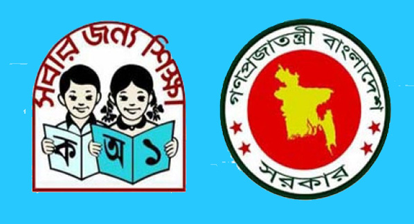

প্রাথমিকের ধারাবাহিকতায় শিক্ষার্থী ভর্তির সাফল্য মাধ্যমিকেও

প্রাথমিকে শিক্ষার্থী ভর্তি প্রায় শতভাগে পৌঁছেছে। কমেছে ঝরে পড়ার হারও। প্রাথমিকের ধারাবাহিকতায় শিক্ষার্থী ভর্তি ও ঝরে পড়ার সাফল্য এসেছে মাধ্যমিকেও। শিক্ষার এ স্তরের গণ্ডি পেরোচ্ছে ৬২ শতাংশের বেশি শিক্ষার্থী। এরা মূলত অতিদরিদ্র্য পরিবারের বাইরের সন্তান। জাতিসংঘের শিক্ষা, বিজ্ঞান ও সংস্কৃতিবিষয়ক সংস্থা ইউনেস্কোর সর্বশেষ প্রতিবেদন বলছে, বাংলাদেশে অতিদরিদ্র পরিবারের ৪ শতাংশের বেশি শিক্ষার্থী মাধ্যমিকের গণ্ডি পেরোনোর আগেই শিক্ষা থেকে ঝরে পড়ছে।
বিভিন্ন দেশের শিক্ষা ব্যবস্থা পর্যবেক্ষণ করে প্রতি বছর ‘গ্লোবাল এডুকেশন মনিটরিং (জিইএম) রিপোর্ট’ প্রকাশ করে আসছে ইউনেস্কো। ২০১৭-১৮ সালের প্রতিবেদনটি প্রকাশ হয়েছে । ‘অ্যাকাউন্ট্যাবিলিটি ইন এডুকেশন: মিটিং আওয়ার কমিটমেন্টস’ শীর্ষক এ প্রতিবেদনে বিভিন্ন দেশের পাশাপাশি বাংলাদেশের শিক্ষা চিত্রও তুলে ধরা হয়েছে।
অতিদরিদ্র পরিবারের ছেলে-মেয়েদের শিক্ষা সমাপনের হার নির্ণয়ে বিভিন্ন দেশের খানা আয়-ব্যয় জরিপের ফল বিশ্লেষণ করেছে জিইএম গবেষক দল। পাঁচ বছরের তথ্য বিশ্লেষণ করেছে তারা।
দৈনিক ২ হাজার ১২২ কিলোক্যালরির নিচে খাদ্যগ্রহণকে অনপেক্ষ দারিদ্র্য ও ১ হাজার ৮০৫ কিলোক্যালরি খাদ্যগ্রহণকে অতিদারিদ্র্য আখ্যায়িত করা হয়। বাংলাদেশে জনপ্রতি দৈনিক ২ হাজার ১২২ কিলোক্যালরি খাদ্যগ্রহণের মাত্রা ঠিক রেখে এর ক্রয় ব্যয় ও খাদ্যবহির্ভূত ভোগব্যয়কে একত্র করে মাসিক জনপ্রতি ১ হাজার ৬০০ টাকার নিচের আয়কে অনপেক্ষ দারিদ্র্য বলা হয়। আর ১ হাজার ৩০০ টাকার নিচের আয়কে অতিদারিদ্র্য হিসেবে গণ্য করা হয়। বাংলাদেশ পরিসংখ্যান ব্যুরোর খানা আয়-ব্যয় জরিপ ২০১৬ অনযায়ী, দেশে দারিদ্র্যের হার ২৪ দশমিক ৩ শতাংশ। আর অতিদরিদ্র মোট জনগোষ্ঠীর ১২ দশমিক ৯ শতাংশ।
বিশেষজ্ঞরা বলছেন, পরিবারের আয়-উপার্জনে ছেলেদের অংশগ্রহণ, মেয়েদের বাল্যবিবাহ অতিদরিদ্র পরিবারের সন্তানদের শিক্ষা সংক্ষিপ্ত করে দিচ্ছে। বিভিন্ন প্রাকৃতিক ও পরিবেশগত দুর্যোগও পিছিয়ে দিচ্ছে এসব পরিবারের সন্তানদের।
ইউনেস্কো বলছে, বাংলাদেশে অতিদরিদ্র পরিবারের ছেলেদের ৫৭ শতাংশ প্রাথমিক শিক্ষা সম্পন্ন করলেও মাধ্যমিকে এসে তা ধরে রাখতে পারছে না। এসব পরিবারের ৯৬ শতাংশ শিক্ষার্থীই মাধ্যমিকের গণ্ডি পেরোনোর আগে ঝরে পড়ছে। মেয়েদের মধ্যে এ হার আরো বেশি। অতিদরিদ্র পরিবারের ৬৮ শতাংশ মেয়ে প্রাথমিক পেরোতে পারলেও মাধ্যমিক শেষ করার আগেই ঝরে পড়ছে এদের ৯৭ শতাংশ।
সাবেক তত্ত্বাবধায়ক সরকারের উপদেষ্টা ও গণসাক্ষরতা অভিযানের নির্বাহী পরিচালক রাশেদা কে চৌধুরী বলেন, দরিদ্র পরিবারের একটি ছেলের বয়স ১০ বছর পার হলেই তাকে দিয়ে উপার্জনের চিন্তা করেন তার মা-বাবা। আবার সে যদি মেয়ে হয়, তাহলে তাকে বিয়ে দেয়ার চিন্তা করেন তারা। ফলে পরিবার ও অভাবের কারণেই নিম্ন মাধ্যমিক শেষ না করেই ঝরে পড়ছে এসব শিক্ষার্থী।
কারণ হিসেবে তিনি বলেন, শিক্ষা ব্যবস্থায় ধনীরা টিকে থাকছে, দরিদ্ররা ছিটকে পড়ছে। অর্থাৎ ঝরে পড়ার কারণ অর্থনৈতিক। তবে প্রাথমিক শিক্ষায় ধনী-দরিদ্রের বৈষম্য কিছুটা কম। প্রাথমিক-পরবর্তী ধাপে শিক্ষার্থীদের ঝরে পড়া এখনো রোধ করা সম্ভব হয়নি। এর মধ্যে দরিদ্র পরিবারের শিক্ষার্থীদের অংশগ্রহণ আশঙ্কাজনক হারে অনেক কম। শিক্ষার সুযোগ সবার জন্য নিশ্চিত করার কথা থাকলেও এখনো তা সর্বজনীন হয়নি। গ্রামাঞ্চলে সরকারি উদ্যোগে গড়ে ওঠা মাধ্যমিক বিদ্যালয়ের সংখ্যাও খুব কম।
মাধ্যমিক-পরবর্তী শিক্ষায় অংশগ্রহণের অসমতা নির্ণয়ে খানা জরিপ বিশ্লেষণে দেখা যায়, স্বল্প ও মধ্যম আয়ের দেশগুলোর শিক্ষা ব্যবস্থায় ধনী পরিবারের শিক্ষার্থীদের অংশগ্রহণ ক্রমান্বয়ে বাড়ছে। বিপরীতে অতিদরিদ্র পরিবারের সন্তানদের অংশগ্রহণের হার শূন্যের কাছাকাছি থাকছে। মাধ্যমিক-পরবর্তী শিক্ষায় অংশগ্রহণে সমতা নিশ্চিত করতে ইউনেস্কোর প্রতিবেদনে নীতিমালা গ্রহণের সুপারিশ করা হয়েছে।
ইউনেস্কোর মতে, জবাবদিহিতা না থাকলে শিক্ষাব্যবস্থায় ক্ষতিকর চর্চা শেকড় ছড়াবে। শিক্ষার বিষয়ে সরকারের স্পষ্ট পরিকল্পনা না থাকলে দায়িত্বের বিষয়গুলো অস্পষ্ট থাকবে। এতে করে প্রতিশ্রুতিগুলো অন্তঃসারশূন্য হয়ে পড়বে এবং গৃহীত নীতিগুলো থাকবে বরাদ্দহীন। সরকার যদি মানসম্পন্ন শিক্ষা নিশ্চিত না করে, তখন বেসরকারি ও অরাষ্ট্র-প্রতিষ্ঠানগুলো সে শূন্যতা পূরণ করে। তবে তারা কাজটি করে জবাবদিহিতা ছাড়াই। এতে করে প্রান্তিক জনগোষ্ঠীর মানুষ শিক্ষাব্যবস্থা থেকে আরো দূরে ছিটকে পড়ে।